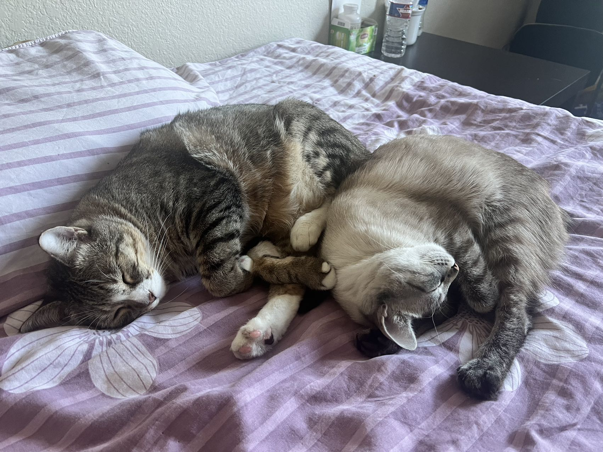
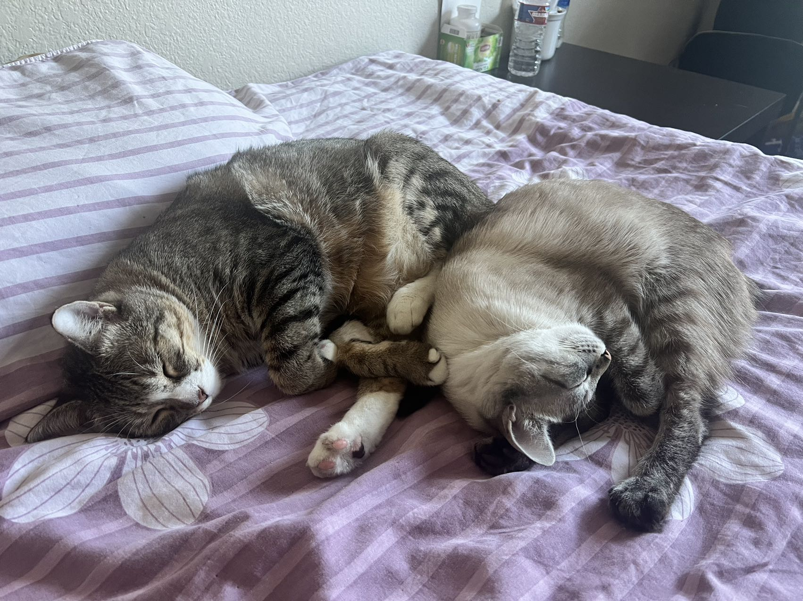

Bacon Q Dog

Bacon Q. Dog is a 9yr old labradoodle. He prefers to spend his days lounging among the three different beds/couches that his family has gifted him. He enjoys a walk or two around the neighborhood, as long as he can pretend that he doesn't see any of the other animals to avoid the embarrassment of not wanting to admit he has no wolf-like skills in chasing them.
At night just as the rest of the family is ready to relax, Bacon suddenly wants to release all of his energy. He will place his toys on a mini couch and frantically drag the couch around, giving his toys "a ride." There is also a lot of rolling. Lots and lots of rolling.
Photo Gallery


Likes
- Belly rubs
- Playing tug-of-war
- Sneaking onto the couch
Sprout

This is Sprout as a kitten, in the new home, in their first photo together with Kai.
"Sprout, a shy and elusive kitten when he first arrived at four months old, gradually became an affectionate companion. He enjoyed sleeping on my bed, but his early morning wake-up calls at 6:30 AM were a daily routine.
Photo Gallery
 



Likes
- Egg
- Playing with Naer and tennis string
- Sleeping in the sunshine
- Kai, Liu, and Mengkun
Pluto

Pluto is a five year old rescue dog of an unknown breed. He was found wandering alone and taken to the Valley Humane Society where he found his new family. From a young age, Pluto always had a special personality, he was known for being very very lazy! He spends most of his time staring out the window to keep watch of his house. Don’t let the laziness fool you because Pluto defends his family from the mailman and squirrels every single day.
Aside from his job as defender of the house, Pluto likes to have fun. Pluto’s favorite part of the day is his daily walk. Sometimes he even gets to go to the park and meet his neighbors. He also loves his toy duck, and only his toy duck. As a dog, it's in his nature to hunt and so he makes sure to get some practice with his toy duck.
Photo Gallery


Likes
- Eating his bone
- Going to the beach
- His toy duck
- Aditi Kagalkar